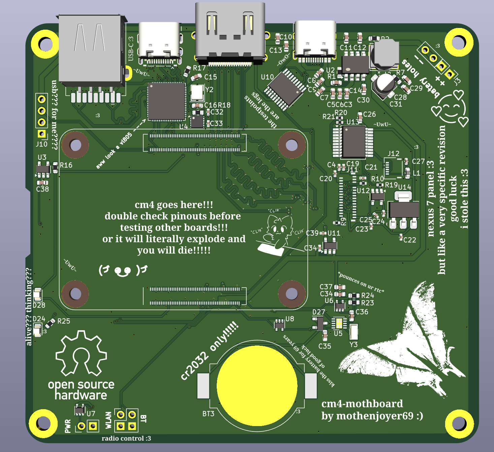

Our projects:
These are our current projects. Anything WIP is subject to me getting bored.
ThinkMoth ExpressCard to NVMe:
An ExpressCard to M.2 2230/2242 NVMe adapter, featuring status LEDs and a microSD
slot for boot support.

View it on Github
RPI CM4 Compute Module Carrier:
A small CM4 carrier board designed for portable use in a variety of form factors.
It features USB 3.0 (Type A and Type-C), HDMI and MIPI-DSI for a Nexus 7 touch panel,
20V USB-C PD negotiation, and hardware killswitches.

View it on Github
Project Dark Wing ADAHRS:
A project to provide a low cost, open source ADAHRS solution for light aircraft.
Phytium D2000 Motherboard:
On ice, awaiting motivation.
View it on Github
MXM Thunderbolt 3 dock:
A TB3 compliant docking station for a mobile MXM GPU. Featuring support for both
standard MXM3.0b and Clevo MXM3.0b cards, and up to 200W of power, with all available
display outputs broken out, and 65W PD supplied to the host device.
View it on Github
ccd-tiny Chromebook CCD debuggers:
A small dual port CCD trigger for Chromebooks with the CC50 debug chip. This adapter
allows for both CCD debugging, and ADB access. This is based on the SuzyQable design with
some tweaks. You can also boot from USB and still have CCD functionality on devices with
limited I/O :)
Coming very soon!
View it on Github